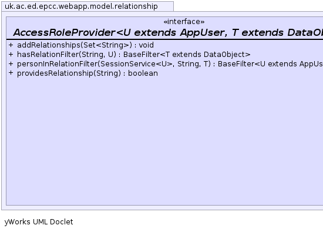
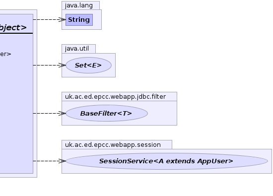

U - AppUser typeT - Target typepublic interface AccessRoleProvider<U extends AppUser,T extends DataObject>
AppUser
and a target object.
If the relationship only depends on the target object not on the AppUser then
use NamedFilterProvider.
DataObjectFactorys and Composites should implement this interface for roles provided by
AppUser references. In this case it is a good idea to return a DualFilter to allow tests
without accessing the database.
It can also be implemented by stand-alone plug-ins.RelationshipProvider,
NamedFilterProvider,
SessionService|  |  |
| Modifier and Type | Method and Description |
|---|---|
BaseFilter<T> |
hasRelationFilter(java.lang.String role,
U user)
Get a
BaseFilter corresponding to target objects where the current user has
the specified relation. |
BaseFilter<? super U> |
personInRelationFilter(SessionService<U> sess,
java.lang.String role,
T target)
Get a
BaseFilter for AppUsers that are in the specified relationship with
the target object. |
boolean |
providesRelationship(java.lang.String role)
Does this class provide the named relationship.
|
BaseFilter<T> hasRelationFilter(java.lang.String role, U user)
BaseFilter corresponding to target objects where the current user has
the specified relation.
If the method returns null then the role is not recognised by the provider.
A non-null result means the role is recognised but does not imply
that any target will match. The relation with a specific target object can be tested using
DataObjectFactory.matches(BaseFilter, DataObject)
This method should not be called directly only via a call to SessionService.getRelationshipRoleFilter(DataObjectFactory, String)
to allow the SessionService to combine and customise access rules.role - user - BaseFilter or nullBaseFilter<? super U> personInRelationFilter(SessionService<U> sess, java.lang.String role, T target)
BaseFilter for AppUsers that are in the specified relationship with
the target object.
This is the inverse of #hasRelationFilter(SessionService, String) used to generate a list
of AppUser with the relation. It can always be implemented (inefficiently) by creating an AcceptFilter
that uses hasRelationFilter(String, AppUser) to check each person in turn but though it is usually possible to find some SQLFilter
to narrow the selection first even if a full SQL implementation is not possible.
If the target is null it should generate a filter for any user in relation with targets
selected by DataObjectFactory.getDefaultRelationshipFilter(). If this is not possible
it should return null;BaseFilter or nullboolean providesRelationship(java.lang.String role)
role -